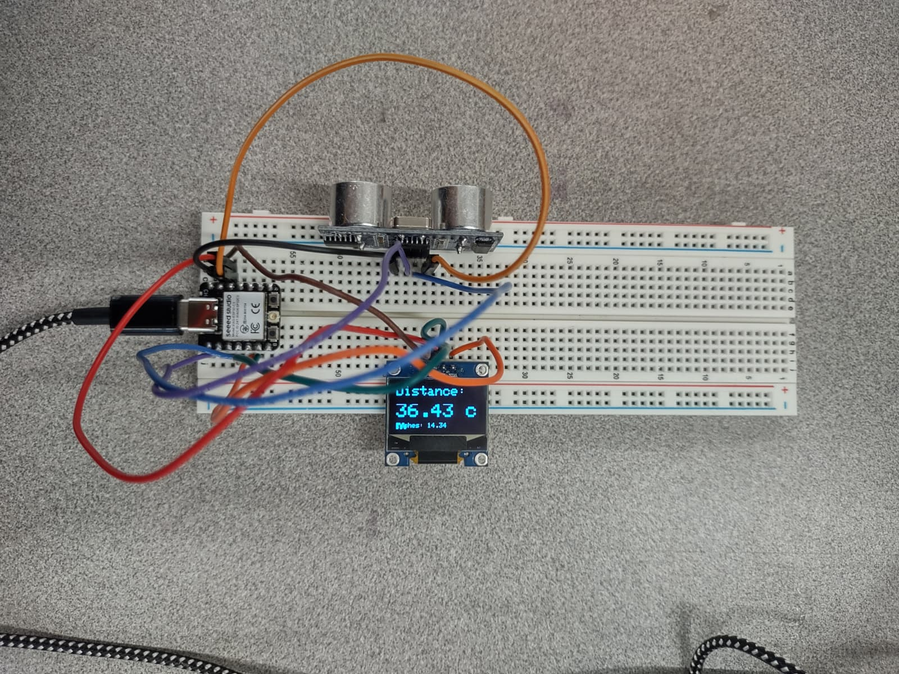

THE DISTANCE SENSOR!!:
This week we had to create a sensor to measure a physical quantity with our microcontroller.
Firstly,The idea of making an ultra sonic sensor seemed impossible to me at first .Plugging in diffrent values into code ,the wiring and much more seemed to be an insurmountable mountain.How did I get overcome it you ask? Worked 8 long hours on an off day.Fisrt I scavenged my materials.I got a breadbord,my trusted xiao ,a usb caable a bunch of wires .Pin to pin wires.I took some help from Bobby but got on the way of my work.It took some amount of work and tutorials to go through before I could connect my sensor to the board and make sure I wired it properly.Taking careful and measured steps on the connection.Connecting the VCC and Trigg was the most difficult and important point for me.OIt is also where I made the most mistakes in connecting the wires.I also made the mistake of connecting the wire to the 5volts instead of the 3.3 volts.After spening a few hours I finished my project or so I thought .But I was suprised by the fact that there were 3 other people that had done the same proximity project but Iwas gunning for that CHECK++ .So I decided to add an Oled display to my project the wiring wasnt as hard I thought it would be but connecting the SCL and SDA were the most important pieces for establishing a connection.

Now came the one part which most of us I assume or atleast I struggle with that is the coding part .Therefor I did the hardwork so you can see the code.Here it is in its entirety:
#include
#include
#include
// OLED Configuration
#define SCREEN_WIDTH 128
#define SCREEN_HEIGHT 64
#define OLED_RESET -1
#define SCREEN_ADDRESS 0x3C
Adafruit_SSD1306 display(SCREEN_WIDTH, SCREEN_HEIGHT, &Wire, OLED_RESET);
// Ultrasonic Sensor Configuration
const int trigPin = D3;
const int echoPin = D0;
//define sound speed in cm/uS
#define SOUND_SPEED 0.034
#define CM_TO_INCH 0.393701
long duration;
float distanceCm;
float distanceInch;
void setup() {
Serial.begin(115200);
// Initialize OLED
if(!display.begin(SSD1306_SWITCHCAPVCC, SCREEN_ADDRESS)) {
Serial.println(F("SSD1306 allocation failed"));
for(;;); // Don't proceed, loop forever
Serial.println(distanceCm);
}
// Clear the display buffer
display.clearDisplay();
// Initialize ultrasonic sensor pins
pinMode(trigPin, OUTPUT);
pinMode(echoPin, INPUT);
// Show initial message
display.setTextSize(1);
display.setTextColor(SSD1306_WHITE);
display.setCursor(0,0);
display.println("Ultrasonic Sensor");
display.println("Initializing...");
display.display();
delay(1000);
}
void loop() {
// Clear the trigPin
digitalWrite(trigPin, LOW);
delayMicroseconds(2);
// Sets the trigPin on HIGH state for 10 micro seconds
digitalWrite(trigPin, HIGH);
delayMicroseconds(10);
digitalWrite(trigPin, LOW);
// Reads the echoPin, returns the sound wave travel time in microseconds
duration = pulseIn(echoPin, HIGH);
// Calculate the distance
distanceCm = duration * SOUND_SPEED/2;
// Convert to inches
distanceInch = distanceCm * CM_TO_INCH;
// Update OLED display
display.clearDisplay();
// Display distance in cm (large font)
display.setTextSize(2);
display.setCursor(0, 0);
display.print("Distance:");
display.setTextSize(3);
display.setCursor(0, 25);
display.print(distanceCm);
display.print(" cm");
// Display distance in inches (small font)
display.setTextSize(1);
display.setCursor(0, 55);
display.print("Inches: ");
display.print(distanceInch);
display.display();
// Print to serial monitor for debugging
Serial.print("Distance (cm): ");
Serial.println(distanceCm);
Serial.print("Distance (inch): ");
Serial.println(distanceInch);
delay(500); // Update every 500ms
}
Min value=0.0 cm
Max value=799.7 cm
Range=Max value
Graph: